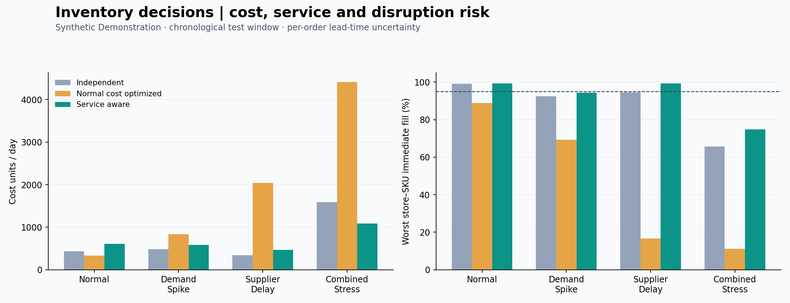
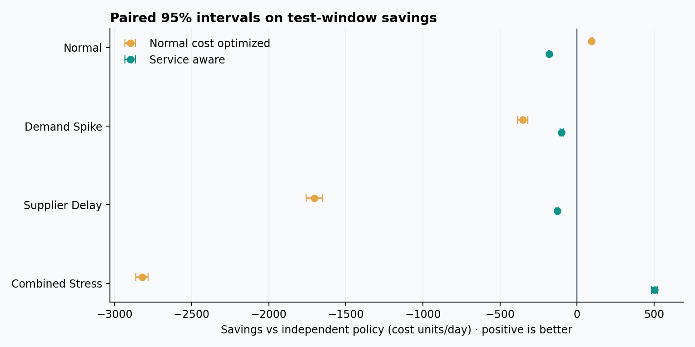

Operations research / Data analytics
Inventory decisions that account for uncertainty.
Compare independent planning, normal-cost optimization and service-aware planning using a transparent Python simulator and chronological demand windows.
3SKUs modeled
6inventory locations
2/4test scenarios meeting the service target with the service-aware policy
Cost and customer service

How certain are the cost differences?

Positive values favor the optimized policy. Intervals account for simulated lead-time randomness, conditional on the observed demand path; they exclude demand-model error.
Scope and provenance
Source: synthetic demonstration. Parameters and policies use training data only. Validation and test results are reported without retuning. A combined demand-and-delay scenario is excluded from policy search.
Model: one product per simulation, multiple independent SKUs, warehouses and stores, FIFO dispatch, customer backorders, random per-order transport times, and unlimited external supply. No production deployment or global optimality is claimed.
Summary CSV · All SKU trials · Run manifest